300 вопросов о цигун. Секреты китайской медицины. Содержание
"10 упражнений гимнастики для суставов" весьма полезны для лечения суставных заболеваний, а также могут служить подготовительным комплексом перед занятиями цигуном.
Первое упражнение: ноги стоят ровно, на ширине плеч, шея прямая, глаза смотрят прямо; обе вытянутые руки синхронно поднимаются кверху, ладони обращены вниз; вслух произносится счет "раз", колени сгибаются под углом примерно 140°, при этом проекция коленных чашечек не должна выходить за линию носков. При приседании резко сгибаются запястья рук так, чтобы пальцы были обращены вниз, затем быстро возвращаются в исходную позицию. На счет вслух "два" повторяются предыдущие движения. Всего выполняется 4 подхода на 8 счетов каждый (рис. 127, 128).
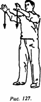
_____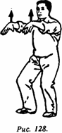
Второе упражнение: встать в исходную позицию, обе руки выпрямлены, пальцы направлены друг к другу, ладони обращены вовнутрь. На счет вслух "раз" одновременно со сгибанием ног в коленях резко сгибаются руки в локтях и запястьях и поднимаются перед грудью. Затем быстро повторяются те же движения. Всего выполняется 4 подхода по 8 счетов (рис. 129, 130).
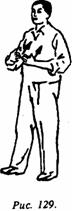
_____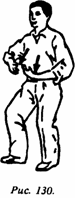
Третье упражнение: встать в исходную позицию; руки согнуты перед грудью, кисти находятся напротив друг друга, ладони обращены наружу, внешняя сторона кистей находится примерно в 10 см от груди. На счет вслух "раз" одновременно с приседанием руки синхронно и быстро распрямляются, при этом ладони двигаются вперед, как будто что-то отодвигая от груди. Затем быстро возвращаются в исходную позицию. На счет "два" повторяется предыдущее движение. Всего выполняется 4 подхода по 8 счетов (рис. 131, 132).
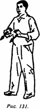
_____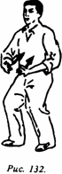
Четвертое упражнение: стать в исходную позицию; согнутые в локтях руки установлены перед грудью, пальцы обращены друг к другу, ладони смотрят вниз. На счет вслух "раз" одновременно с приседанием выполняется резкое сгибание запястий по направлению вниз. Затем быстро возвращаются в исходную позицию. На счет вслух "два" повторяются предыдущие движения. Всего выполняется 4 подхода по 8 счетов (рис. 133, 134).
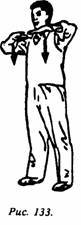
_____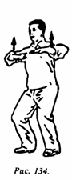
Пятое упражнение: встать в исходную позицию; руки разведены в стороны параллельно земле на уровне плеч, ладони обращены вниз. На счет вслух "раз" одновременно с приседанием делается резкое сгибание запястий вниз. Затем быстро возвращаются в исходную позицию. На счет вслух "два" вновь выполняют предыдущие движения. Всего делается 4 подхода по 8 счетов (рис. 135, 136).
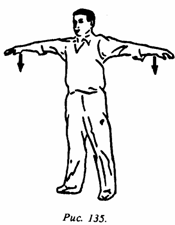
_____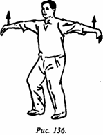
Шестое упражнение: встать в исходную позицию; согнутые в локтях руки находятся перед грудью, пальцы обращены друг к другу, ладони повернуты вверх. На счет вслух "раз" одновременно с приседанием руки резко разгибаются в локтях, как бы что-то отталкивая вверх (движение словно в волейболе). Затем быстро возвращаются в исходную позицию. На счет вслух "два" повторяются эти же движения. Выполняется 4 подхода по 8 счетов (рис. 137, 138).
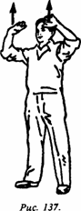
_____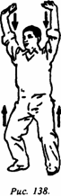
Седьмое упражнение: встать в исходную позицию; обе руки вытянуты вперед параллельно земле, ладони обращены вниз. На счет вслух "раз" одновременно с приседанием резко сгибаются запястья вниз. Затем быстро возвращаются в исходную позицию. На счет вслух "два" движения такие же, как и на счет "раз", обе руки двигаются влево на 45°; на счет "три" движения такие же, как и на счет "раз" и "два", обе руки двигаются влево на 90°; на счет "четыре" движения такие же, как на счет "раз", "два", "три", руки двигаются назад примерно на 135°. На счет "пять", "шесть", "семь", "восемь" движения выполняются вправо аналогичным образом, затем возвращаются в исходную позицию. После этого делается цикл таких же постепенных поворотов с возвратом в исходную позицию на 8 счетов. Всего выполняется 8 подходов на 8 счетов каждый (рис. 139, 140).
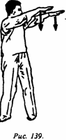
_____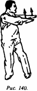
Восьмое упражнение: встать в исходную позицию; согнутые в локтях руки выставлены вперед параллельно земле, ладони обращены вниз, угол между грудью и каждой рукой равен примерно 45°. На счет вслух "раз" одновременно с приседанием запястья резко сгибаются вниз и разгибаются. Затем быстро возвращаются в исходную стойку. На счет "два" повторяются предыдущие движения. Всего выполняется 4 подхода по 8 счетов (рис. 141, 142).
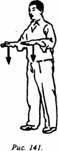
_____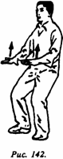
Девятое упражнение: левая нога делает шаг вперед, носок обращен вперед; правая нога отставлена назад таким образом, что стопа перпендикулярна линии, на которой находится левая нога. Руки вытянуты горизонтально: одна вперед, другая назад; ладони обращены вниз; левая рука вытянута в том же направлении, что и стопа левой ноги. На счет вслух "раз" со сгибанием ног в коленях принимается "поза лучника", одновременно с этим обе руки в запястье делают вращательные движения (вниз и вовнутрь). Затем возвращаются в исходную позицию. На счет вслух "два" повторяют те же движения, что и на счет "раз". Всего выполняется 4 подхода по 8 счетов (рис. 143).
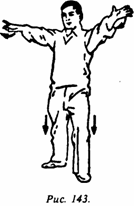
Десятое упражнение: выполняется на основе девятого упражнения; вперед выставляется правая нога, носок обращен вперед, линии, на которых стоят ступни ног, взаимно перпендикулярны. Движения точно такие же, как и в предыдущем упражнении. Всего выполняется 4 подхода по 8 счетов (рис. 144).
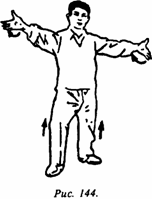
Напоследок сделать шаги на месте - 4 подхода по 8 счетов. После того как выполнены все вышеописанные упражнения, во всем теле может ощущаться тепло, вплоть до появления пота, что создает хорошую основу для выполнения последующих упражнений цигуна. Особенно рекомендуется заниматься "десятью упражнениями гимнастики для суставов" в зимнее время.
300 вопросов о цигун. Секреты китайской медицины. Содержание